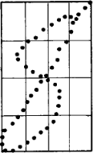
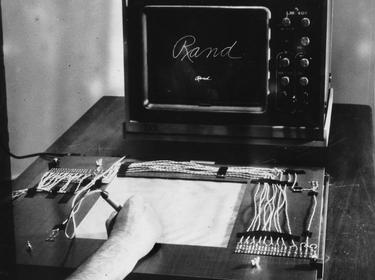
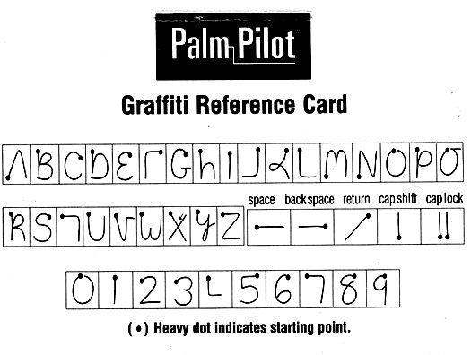

Concatenative programming is so called because it uses function composition instead of function application.
The dizzying shelves that obliterate the day and on which chaos lies.

We use software because we have goals to achieve and things to do. The software we use is coded by programmers who have their own goals, sometimes these goals overlap with ours, over time these will diverge. The tools we depend on grow features we don't use or understand, introducing bugs that will prevent us from reaching our goals.
We have the choice of trying to understand the code and fix it, we have the choice of trying another program, and we have the choice of coding the software ourselves. All but the last path mean endless seeking, evaluating and further deviation from our goals.
- We implement it according to our own goals.
- We make mistakes and learn from them.
- We learn how the tools we depend on need to work.
- We gain a deep understanding of our problem domain.
- We embrace sharing of ideas and code.
Let's call a program elegant if no smaller program written in the same programming language has the same output.

Jen came in to see what incredible things the engineers and artists had come up with. Everyone was staring at a television set hooked up to a development box for the Sony Playstation. There, on the screen, against a single-color background, was a black triangle. ~
Programming is a form of worldmaking, in which the coder defines how that world operates.~
A programming language is a system of notation for writing computer programs.
I've collected here a handful of notes on the various languages that I've had the opportunity to use in the past.
Nowadays, my focus is principally on concatenative languages, namely Uxntal. In concatenative languages all expressions denote functions, and the juxtaposition of expressions denotes function composition, which I found was a way of programming that most resonated with how I think.
Point-free programming is a programming paradigm in which function definitions do not identify the arguments on which they operate. Instead the definitions merely compose other functions, among which are combinators that manipulate the arguments.
An operating system manages computer hardware, software resources, and provides common services for programs.
The price of reliability is the pursuit of the utmost simplicity. It is a price which the very rich find most hard to pay.~

Time is valuable and ten seconds' worth of it is well worth the investment of a day's happy activity working out a way of saving it.Douglas Adams
Graphical input is concerned about communicating with the computer in a visual language.
In the 1960s, Gabriel Groner wrote a program which recognized handprinted letters, numbers, punctuation marks, and geometric figures. A user communicates with the computer via writing on a tablet with a pen, pressing it against the writing surface.
The decoding scheme smoothes the stroke by averaging a newly arrived point with the previously smoothed point. Next, thinning removes some of the points from the pen stroke by comparing the latest position with the position of the previous point in the thinned track. By detecting changes in the direction of the points in the path we have sufficient description for recognition.
Palm Graffiti
Graffiti is a single-stroke shorthand handwriting recognition system used in PDAs based on the Palm OS in which the user cannot see their stroke. The software is based primarily on a neography of upper-case characters that can be drawn blindly with a stylus on a touch-sensitive panel.
Various file formats used across projects.
Various data encoding schemes.
Types are a way to suggest or restrict the activities possible for an object of that type.
A type system defines how a programming language classifies values and expressions into types, how it can manipulate those types and how they interact. The goal of a type system is to verify and usually enforce a certain level of correctness in programs written in that language by detecting certain incorrect operations. Type inference refers to the automatic detection of the type of an expression.
Weak typing allows a value of one type to be treated as another, for example treating a string as a number. Strong typing raises an error on attempts to perform an operation on the wrong type of value.
Type Inference in Stack-Based Programming Languages
In an applicative language, things are evaluated by applying functions to arguments. This includes almost all programming languages in wide use, such as C, Python, ML, Haskell, and Java. In a concatenative programming language, things are evaluated by composing several functions which all operate on a stack, passed from function to function.
Type inference in stack-based programming language is done by checking the stack effect declarations of words before they can be run, against the cumulative stack state of each item in the definition of each word.
pop ( 1 -- ) swap ( 1 2 -- 2 1 )
Words that do not pass the stack checker are rejected and cannot be run, and so essentially this defines a very simple and permissive type system that nevertheless catches some invalid programs and enables compiler optimizations.
The simplest case is when a piece of code does not have any branches or recursion, and just pushes literals and calls words. Pushing a literal has stack effect ( -- x ). The stack effect of most words is always known statically from the declaration.

Typed Concatenative Languages
- A foundation for typed concatenative languages, Rob Kleffner
- Simple Type Inference for Higher-Order Stack-Oriented Languages, Christopher Diggins
- Talk Notes, Rob Kleffner
- Data types of Joy
- Languages:
Software versioning is the process of assigning unique version names or numbers to unique states of computer software.
Since version 3, TeX has used an idiosyncratic version numbering system, where updates have been indicated by adding an extra digit, so that the version number asymptotically approaches π. The current version of TeX is 3.141592653; it was last updated in 2021.
14R11— Learning Forth14Q11— Learning 6502 Assembly14O03— Learning C14H04— Learning Pascal10W03— Learning Lisp08J07— Learning Python07S03— Learning PureData07C04— Learning Objective-C06N10— Learning Ruby05Z03— Learning PHP03R00— Learning Javascript00I04— Learning HTML
incoming calendar calendar calendar calendar calendar calendar calendar calendar calendar calendar calendar calendar language